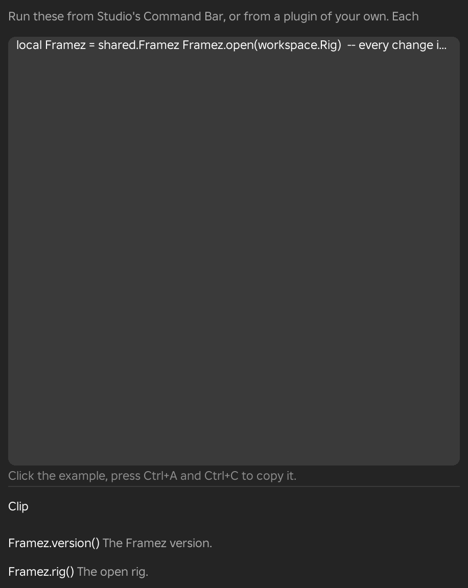

Scripting
The Scripting window lists the functions that let a script work on the open animation. You can run them from Studio's Command Bar or from a plugin of your own, to open and save animations, read and write keys, run Framez's tools with values from a script, add tools of your own, and react when an animation is opened, saved or changed.
The Scripting Window
- Menu
- Help ‣ Scripting...
The Scripting window opens as a floating window. At the top is an example script in a box. Under it, the functions are listed in four groups with a line on what each does, and a final line says that a joint is given by its name, as Framez.joints() lists it. To use the example, click in the box, press Ctrl+A and Ctrl+C to copy it, paste it into Studio's Command Bar and change it.
All of the functions are in one table, shared.Framez, which Framez sets when it loads and removes when the plugin unloads. Every function checks its arguments and returns its result, or nil and a sentence giving the reason. None of them raises an error for bad input, so a script can test the second value instead of wrapping each call. Changes made through the functions can be undone with Ctrl+Z, like changes made by hand.
A joint is given by the name of the part that it moves, such as "Head" or "RightUpperArm". The name list is returned by Framez.joints(), and a Motor6D of the open rig is accepted as well. A frame is a whole number, and a number with a fraction is rounded.
The example opens a rig, turns the head at frame 30 in one undo step, runs the Breathing tool and changes its amount, adds a tool of your own called Lean, and prints a line each time an animation is saved.
local Framez = shared.Framez
Framez.open(workspace.Rig)
-- every change inside is one undo step
Framez.batch(function()
for _, joint in Framez.joints() do
local cf = Framez.value(joint, 0)
if cf then
Framez.setKey(joint, 30, cf * CFrame.Angles(0, math.rad(15), 0))
end
end
end)
-- a tool from the Modifiers window, then a different value
local id = Framez.run("breathe", { amount = 3 })
Framez.change(id, { amount = 5 })
-- your own tool, listed in the Modifiers window's Add menu under My tools
Framez.addKind({
id = "lean",
label = "Lean",
defaults = function()
return { degrees = 10 }
end,
apply = function(p, api)
local cf = api.value("UpperTorso", 0)
if cf then
api.setKey("UpperTorso", 20, cf * CFrame.Angles(math.rad(p.degrees), 0, 0))
end
end,
})
Framez.on("saved", function(clip)
print("Saved " .. clip.name)
end)

Example
For example, a script can open every rig in a folder, key the same head turn on each of them in one undo step, and save them, which would take many clicks by hand.
Clip
The Clip functions open, save and describe the animation that Framez has open.
Framez.version()
Framez.version() returns the version of Framez as text. It takes no arguments.
Framez.rig()
Framez.rig() returns the rig that is open, as a Model, or nil when no animation is open.
Framez.open(rig, clip?)
Framez.open opens a rig for animating, and optionally opens one of its saved animations. It returns the rig. If another rig is open, Framez lets go of it first without asking, so save the animation with Framez.save before opening another rig.
Options
- rig
- A Model that Framez can animate. Anything else returns
nilwith the message "open needs a Model." - clip
- Optional. The name of a saved animation of that rig, as a text. When the rig has no saved animation with that name, the function returns
niland says so.
If Framez cannot open the rig, for example because someone else in a Team Create place is animating it, the function returns nil and says that Framez could not open that rig.
Example
For example, Framez.open(workspace.Hero, "Slash") opens the rig named Hero and its saved animation named Slash.
Framez.save(name?)
- Needs
- An open animation
Framez.save saves the open animation, under its own name or under the name given, and returns the name it saved. Nothing is saved when the animation has no keys, and the function then returns nil with the message "Nothing was saved: key a pose first."
Options
- name
- Optional. A text that is not empty. The animation is saved under this name next to the rig's other saves, as Save would.
Framez.clip()
- Needs
- An open animation
Framez.clip() returns a table that describes the open animation. Its fields are name, fps for the frame rate, frames for the number of frames, and loops, which is true when the animation loops.
Keys
The Keys functions read and write the keys of one joint. A key is the pose of a joint at one frame, stored as a CFrame, which is the same value that Framez keeps for the joint.
Framez.joints()
Framez.joints() returns a list with the name of every joint of the open rig, parents first. These names are what the other functions accept as a joint. It takes no arguments and returns an empty list when no animation is open.
Framez.key(joint, frame)
Framez.key returns the CFrame of the key that the joint has at that frame. When the joint has no key there, it returns nil with the message "No key there."
Options
- joint
- A joint name from
Framez.joints(). - frame
- The frame number.
Framez.keys(joint)
Framez.keys returns every key of a joint as a table of CFrames indexed by frame number. A joint with no keys gives an empty table.
Framez.value(joint, frame)
Framez.value returns the CFrame that the joint has at a frame, as Framez shows it. Unlike Framez.key, it works on any frame, not only on a key, and it includes the effect of animation layers and curve modifiers. When the joint has no keys, it returns nil and says that the joint has no keys.
Example
For example, read Framez.value("Head", 12) to get the head's pose at frame 12 and use it as the starting point for a new key at frame 30.
Framez.setKey(joint, frame, cf, style?)
- Needs
- An open animation
Framez.setKey sets a key on a joint and returns true. A key that already exists at that frame is replaced. Outside Framez.batch, each call is one undo step.
Options
- joint
- A joint name from
Framez.joints(). - frame
- A frame from 0 to the last frame of the animation. A frame outside it returns
niland says what the range is. - cf
- The pose of the joint, as a CFrame with finite numbers.
- style
- Optional. The easing of the move that starts at this key. The choices are Linear, None (a hold), Sine, Quad, Cubic, Quart, Quint, Sextic, Expo, Circ, Back, Bounce and Elastic. When it is left out, a key that already exists keeps its style and curve, and a new key is Linear.
Notes
A locked track is not changed. The function returns nil and says which joint is locked.
Framez.removeKey(joint, frame)
- Needs
- An open animation
Framez.removeKey removes the key that a joint has at a frame and returns true. When there is no key there it returns nil with the message "No key there." A locked track is not changed. Outside Framez.batch, each call is one undo step.
Framez.batch(fn)
- Needs
- An open animation
Framez.batch runs a function so that everything it does is one undo step, and redraws the timeline once at the end. The function receives the Framez table as its argument. The result is whatever the function returns, or true when it returns nothing. If the function raises an error, the changes made so far stay, and batch returns nil with the error message.
Example
For example, put a loop of Framez.setKey calls inside batch to key forty joints, so that one Ctrl+Z takes all of them back and the timeline is drawn once instead of forty times.
Tools
The Tools functions run the tools whose results appear as items in the Modifiers window, and work on the items that they made.
Framez.kinds()
Framez.kinds() returns a table of the tools that can be run from a script, with each tool's id as the key and its name as the value. The ids are what Framez.run and the other tool functions accept.
Framez.run(kindId, params?)
- Needs
- An open animation
Framez.run runs a tool and returns the id of the item it made in the Modifiers window. The tool runs with its usual values, changed by whatever you pass in params, and it keys the animation as it does when run from a menu.
Options
- kindId
- The id of a tool, from
Framez.kinds(). An id that is not a tool returnsniland points toFramez.kinds(). - params
- Optional. A table of the tool's values to change, such as
{ amount = 3 }. The others keep their usual values.
When the tool cannot run, for example because it needs a selected limb, or when it changes nothing, the function returns nil and says so.
Framez.change(itemId, params)
Framez.change changes values of an item and makes it again with them, as dragging a value in its card does. It returns true.
Options
- itemId
- The id that
Framez.runreturned, or the id of an item fromFramez.items(). - params
- A table of the values to change. Values that are not named keep what they were. The Mix settings of the item are in
params._mix, which holdss,mode,a,b,fin,fout,curve,drive,endsandshape.
Framez.move(itemId, dir)
Framez.move moves an item one place earlier or later in the Modifiers window and returns true. Each item is made again on top of whatever is then under it. At the end of the list it returns nil and says that the item is already at that end.
Options
- itemId
- The id of an item.
- dir
- -1 for one place earlier, or 1 for one place later. Anything else is refused.
Framez.items()
Framez.items() returns a list of the items in the open animation, in the order of the Modifiers window. Each entry is a table with id, kind for the tool's id, on for whether it is turned on, and params for its values. The values are copies, so changing them does not change the item.
Framez.setOn(itemId, on)
Framez.setOn turns an item on or off, as the eye button on its card does. The second value must be true or false. It returns true.
Framez.apply(itemId)
Framez.apply keeps an item's keys and forgets how they were made, so the item leaves the Modifiers window and its keys stay in the animation. It returns true.
Framez.delete(itemId)
Framez.delete takes an item out together with the keys it made, so the animation returns to how it was under it. It returns true.
Framez.addKind(def)
Framez.addKind adds a tool of your own. It appears in the Add menu of the Modifiers window, under My tools or under the group you name, and its results are items that can be changed, turned off and undone like those of any other tool. The function returns the tool's id. Registering the same id again replaces the tool, and an id that another tool already uses is refused.
Options
- id
- A text that names the tool. Framez puts
user.in front of it when it is not there already. - label
- The name the tool shows in the menu and on its cards.
- group
- Optional. The group in the Add menu that lists the tool. The default is My tools.
- tip
- Optional. A line of help shown beside the tool in the menu.
- defaults
- Optional. A table of the tool's values, or a function that returns one. Numbers and booleans in it get a slider or a tick on the tool's card, unless you supply rows.
- rows
- Optional. A function that builds the rows of the tool's card from its values.
- apply
- A function,
apply(params, api), that makes the keys. Its params are the tool's current values. Its api holdsrig,joints,key,keys,value,setKey,removeKeyandclip, which work as the functions of the same names do without their own undo step, together withframes()for the number of frames andframe()for the playhead's frame. The item is the undo step. Returningfalseand a message reports a failure, and returning a text shows it in the status line.
Example
For example, the Lean tool in the example script leans the upper torso forward by the number of degrees on its card, and its card shows a slider named degrees without any more code.
Events
The Events function lets a script react to what happens to the open animation.
Framez.on(event, fn)
Framez.on calls a function whenever an animation is opened, saved or changed. The function receives a table that describes the animation, with the same fields as Framez.clip(), and for a save the name field is the name that was saved. The call returns a function that stops listening when you call it.
Options
- event
- "opened" fires when an animation is opened. "saved" fires after a save, not counting the _MOVING copy. "changed" fires after each undo step, a moment after the change. When several changes happen together, the function is called once.
- fn
- The function to call. A function that raises an error is reported in the output and does not stop the others.
Example
For example, local stop = Framez.on("saved", print) prints every save. Calling stop() later ends it.